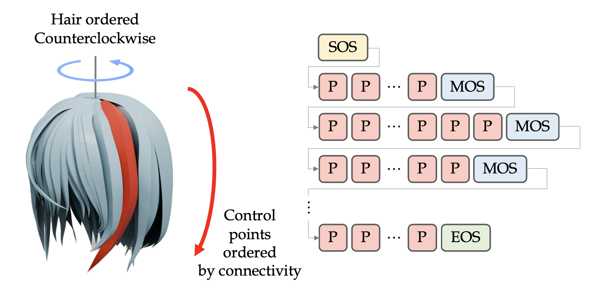

We present CHARM, a novel parametric representation and generative framework for anime hairstyle modeling. While traditional hair modeling methods focus on realistic hair using strand-based or volumetric representations, anime hairstyle exhibits highly stylized, piecewise-structured geometry that challenges existing techniques. Existing works often rely on dense mesh modeling or hand-crafted spline curves, making them inefficient for editing and unsuitable for scalable learning.
CHARM introduces a compact, invertible control-point-based parameterization, where a sequence of control points represents each hair card, and each point is encoded with only five geometric parameters. This efficient and accurate representation supports both artist-friendly design and learning-based generation.
Built upon this representation, CHARM introduces an autoregressive generative framework that effectively generates anime hairstyles from input images or point clouds. By interpreting anime hairstyles as a sequential "hair language", our autoregressive transformer captures both local geometry and global hairstyle topology, resulting in high-fidelity anime hairstyle creation.
To facilitate both training and evaluation of anime hairstyle generation, we construct AnimeHair, a large-scale dataset of 37K high-quality anime hairstyles with separated hair cards and processed mesh data.
Extensive experiments demonstrate state-of-the-art performance of CHARM in both reconstruction accuracy and generation quality, offering an expressive and scalable solution for anime hairstyle modeling.
We propose a compact and invertible parametric representation for anime hairstyles: each unit is defined by a control point with only five parameters indicating 3D position, width, and thickness. A sequence of such control points then constitutes a individual hair, with a complete hairstyle consisting of 25-130 individual hairs. We further developing an optimization system that supports conversion between our proposed parametric model and conventional 3D mesh formats. Based on the representation, we design the autoregressive hairstyle transformer and its sequence formulation. Training on our AnimeHair dataset with 37K anime hairstyles, our model achieves high-quality and high-fidelity anime hairstyle generation, demonstrating the strong capability in both faithful reconstruction and creative hairstyle synthesis.
@article{he2025charm,
title={CHARM: Control-point-based 3D Anime Hairstyle Auto-Regressive Modeling},
author={He, Yuze and Zhou, Yanning and Zhao, Wang and Ye, Jingwen and Bai, Yushi and Xiao, Kaiwen and Liu, Yong-Jin and Sun, Zhongqian and Yang, Wei},
journal={arXiv preprint arXiv:2509.XXXXX},
year={2025}
}